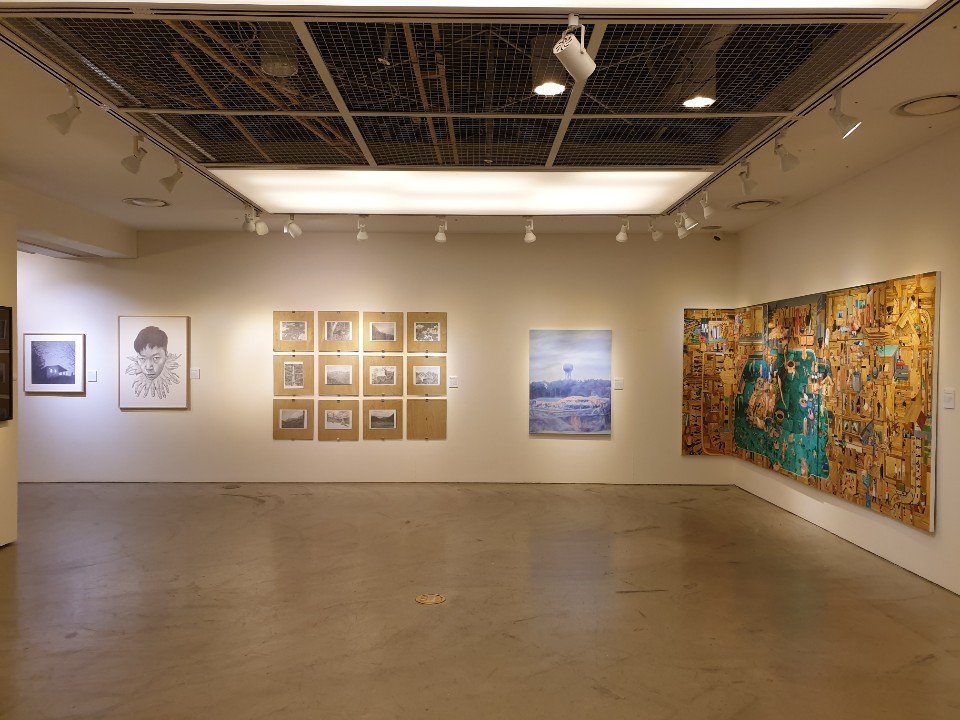
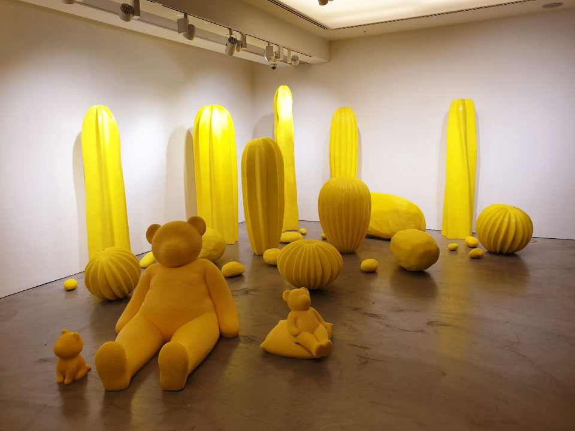
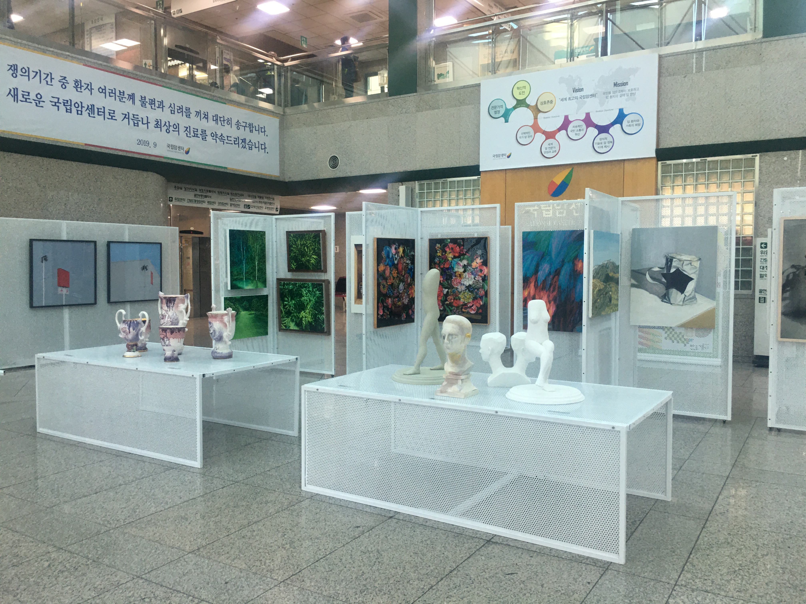
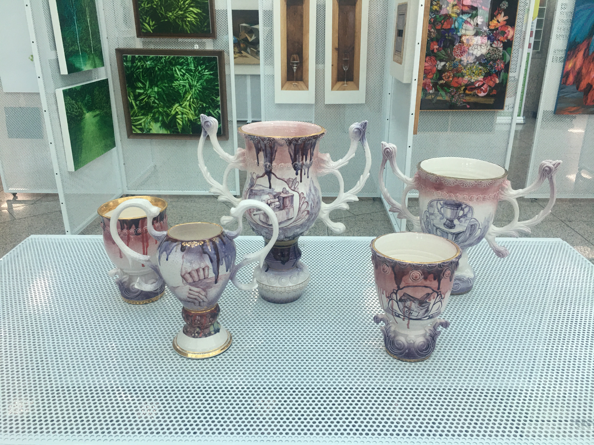

아트경기 캠페인전과 팝업갤러리는 도내 공공기관 및 공공시설과 연계하여 로비나 문화공간에 미술품을 전시하고, 도민들이 일상에서 쉽게 미술작품을 감상함과 동시에, 누구나 현장에서 작품을 직접 구매 할 수 있는 기회를 제공합니다. 캠페인전은 경기도청과 경기도의회를 시작으로 농촌진흥청(수원) 10월, 신한은행 PWM 판교센터와 판교 세븐벤처밸리는 11월부터 지역과 기관을 순회하며 진행할 예정이며 팝업갤러리는 AK플라자 수원점 AK 갤러리와 일산 국립암센터에서 11월과 12월에 개최합니다.

'경기, 아트로 물들다'
‘경기, 아트로 물들다’ 는 아트경기 프로젝트의 일환으로 진행되는 캠페인 전시로, 2019 아트경기 선정작가의 작품들을 공공기관과 기업의 방문객 방문공간에 전시하여 미술품 소장과 활용을 홍보하고, 도민의 문화예술 향유문화를 확산하고자 기획되었습니다.
주관: 칸 KAN


'경기도청 경기도 의회 : <우리 시대의 새로운 풍경을 찾아서>
- 일시 : 2019.09.02 (목) ~ 11.30 (금)
- 장소 : 경기도청 신관, 경기도의회
우리가 살아가는 실내외 정경, 대상과 사람을 소재로 한 작품, 내 마음 속 이야기 등 동시대 작가들의 마음 속 풍경을 바라보는 전시입니다. 경기도청 이라는 열린 공간 속, 경기지역에서 창작활동에 매진하는 작가들이 펼쳐내는 다양한 ‘풍경’을 통해 우리 시대에 개개인이 느끼는 새로운 ‘풍경’을 찾아가는 기회를 갖고자 합니다.
참여작가
김건일, 김남용, 김리윤, 김상균, 이건희, 이미숙, 이해균, 임선이, 박용남, 박재영, 박현우, 전승일, 최빛나
농촌진흥청 국립식량과학원 : <자연 그리고 정물을 바라보다>
- 일시 : 2019.10.21 (월) ~ 10.31 (목)
- 장소 : 국립식량과학원 연구동 로비
전시는 다채로운 색감과 재료로 ‘정물’을 그려내는 여러 경향의 정물화를 소개합니다. 색감이나 붓 터치, 재료의 재질감을 통해 사물의 서정적인 감성을 드러내는 경향, 대상에 작가의 관조적 시선을 담아 사물을 특정 서사의 매개체로 삼아 작업한 정물화를 한 자리에서 볼 수 있는 기회를 갖고자 합니다.
참여작가
김남용, 김리윤, 김상균, 나광호, 오상은, 이미숙, 이영후, 이종송, 이해균, 이효주, 임선이, 황혜진
판교세븐벤처밸리 : <오피스 뮤지엄 : 공공예술 & 헤리티지 콜렉션>
- 일시 : 2019.11.28 (목) ~ 12.20 (금)
- 장소 : 판교세븐벤처밸리 로비
전시는 “오피스 뮤지엄(Office Museum)” 이라는 주제 아래 “공공예술(Public Art)”와 “헤리티지 콜렉션(Heritage Collection)”이라는 제목으로 판교세븐벤처밸리, 신한은행 판교 PWM에서 동시에 개최되고, 이 중 판교세븐벤처밸리는 공공전시로 선보입니다.
참여작가
김건일, 김리윤, 김명선, 김수정, 김시종, 류신정, 박미라, 박재석, 백진기, 송하경, 안병철, 안정연, 원유진, 이가빈, 이미숙, 이수빈, 이용태, 이종송, 이종호, 이해균, 이효주, 임승섭, John Cook
판교세븐벤처밸리 : <오피스 뮤지엄 : 공공예술 & 헤리티지 콜렉션>
- 일시 : 2019.11.28. (목) ~ 12.27 (금)
- 장소 : 판교 신한 PWM
전시는 “오피스 뮤지엄(Office Museum)” 이라는 주제 아래 “공공예술(Public Art)”와 “헤리티지 콜렉션(Heritage Collection)”이라는 제목으로 판교세븐벤처밸리, 신한은행 판교 PWM에서 동시에 진행합니다. 예술 경험의 기회가 유희와 학습의 영역에서 나아가 “나의 인생 예술품”으로 만날 수 있도록 제안합니다.
참여작가
김건일, 김리윤, 김명선, 김수정, 김시종, 류신정, 박미라, 박재석, 백진기, 송하경, 안병철, 안정연, 원유진, 이가빈, 이미숙, 이수빈, 이용태, 이종송, 이종호, 이해균, 이효주, 임승섭, John Cook
<공존>
- 일시 : 2019.11.20. (수) ~ 11.25 (월)
- 장소 : 수원 AK Gallery
전시는 경기도의 문화, 역사, 사회상과 현대미술을 경기도 지역 문화 향유 및 도내 작가들의 활동을 통하여 “공존” 하고자 하는 긍정적인 취지를 담고 있습니다. <공존>전시와 연계하여 참여 작가 ‘정주영’이 함께하는 ‘작가와의 대화’ 또한 진행됩니다.
참여작가
고유진, 김건일, 김상균, 김소정, 김은진, 박소현, 박수환, 박승예, 송수영, 옥정호, 이부강, 이재인, 이진솔, 이효주, 임선이, 정주영, 정찬부, 조문희, 최은경
주관 : 상업화랑
 <2019 아트경기 팝업갤러리 X 국립암센터>
- 일시 : 2019.10.30 (수) ~ 11.22 (금)
- 장소 : 일산 국립암센터 본관 1층 로비
전시와 옥션으로 구성되어 경기도 도민의 문화향유와 도내 예술작가들의 작품 판매로 작가의 창작 활동을 지원합니다. 회화, 사진, 조각, 설치 등 다양한 장르의 작품을 선보이며, 국립암센터 이용객 및 환자는 물론 누구나 쉽게 방문해 작품을 감상 및 구매를 통한 소장까지 가능한 전시입니다.
주관 : (주)아트플레이스
 